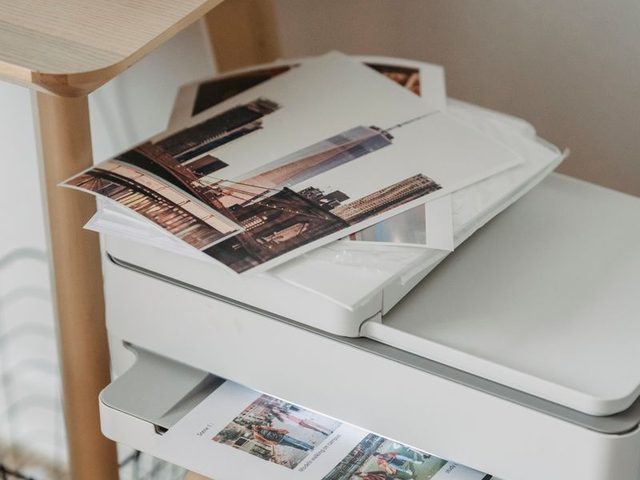
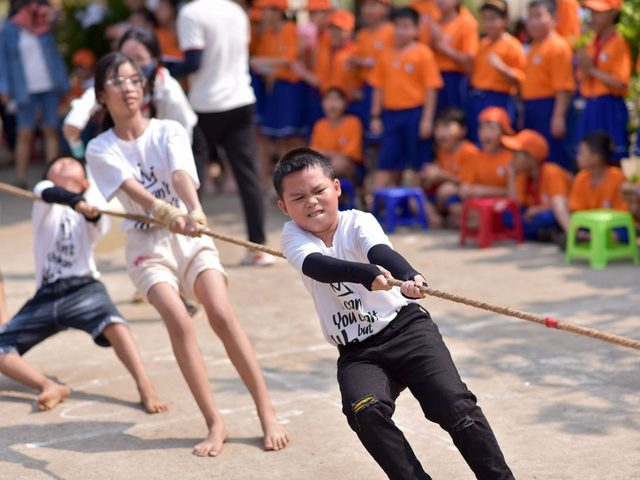
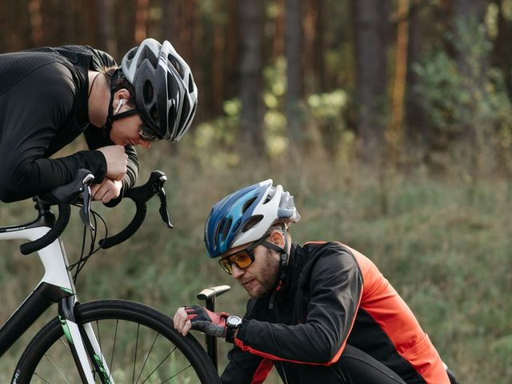
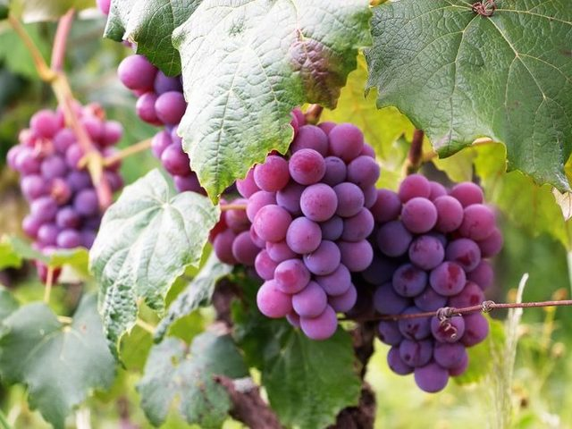

UNIT 37 · VOCABULARY
P 開頭（四）
P-IV
41 個單字聽・唸・用
本單元單字一覽
WORD UP「P-IV」的 41 個字（primary 到 puzzle）。紅色＝要複習，藍色標籤＝WORD UP 標熟記、還要在這裡考對。
primaryprinceprincessprincipalprincipleprintprinterprisonprisonerprivateprizeprobablyproblemproduceproductproductionprofessorprogramprogressprojectpromisepronounceproposeprotectprotectionproudproveprovidepublicpullpumppumpkinpunishpuppypurchasepurplepurposepursepushputpuzzle
每個字都有 🔊，先聽發音、跟著唸，再看例句。
單字 1–4
🏫
primary
主要的；初級的adj.
My sister is in primary school.
我妹妹讀小學。
我妹妹讀小學。

prince
王子n.
The prince lived in a castle.
王子住在城堡裡。
王子住在城堡裡。

princess
公主n.
The princess has long hair.
公主有一頭長髮。
公主有一頭長髮。

principal
校長n.
The principal gave a speech.
校長致詞。
校長致詞。
單字 5–8
📏
principle
原則n.
Honesty is my principle.
誠實是我的原則。
誠實是我的原則。

print
列印；印刷v.
Please print this page for me.
請幫我印這一頁。
請幫我印這一頁。
printer
印表機n.
The printer is out of paper.
印表機沒紙了。
印表機沒紙了。
🔒
prison
監獄n.
The thief was sent to prison.
小偷被送進監獄。
小偷被送進監獄。
單字 9–12
⛓️
prisoner
囚犯n.
The prisoner escaped.
囚犯逃走了。
囚犯逃走了。
🚫
private
私人的adj.
This is a private beach.
這是私人海灘。
這是私人海灘。

prize
獎品；獎n.
She won first prize in the contest.
她在比賽中得了第一名。
她在比賽中得了第一名。
🌧️
probably
大概；很可能adv.
It will probably rain tonight.
今晚很可能會下雨。
今晚很可能會下雨。
單字 13–16
❓
problem
問題n.
Can you help me? — No problem!
你可以幫我嗎？——沒問題！
你可以幫我嗎？——沒問題！
🏭
produce
生產；製造v.
This factory produces bikes.
這家工廠生產腳踏車。
這家工廠生產腳踏車。

product
產品n.
This is a new product.
這是新產品。
這是新產品。

production
生產；產量n.
Rice production is high this year.
今年稻米產量很高。
今年稻米產量很高。
單字 17–20
professor
教授n.
My uncle is a professor at a university.
我叔叔是大學教授。
我叔叔是大學教授。

program
節目；計畫；程式n.
What's your favorite TV program?
你最喜歡哪個電視節目？
你最喜歡哪個電視節目？
📈
progress
進步n.
You have made great progress.
你進步很多。
你進步很多。

project
專案；計畫；報告n.
We are working on a science project.
我們在做一份自然科專題。
我們在做一份自然科專題。
單字 21–24
🤞
promise
承諾；答應v./n.
I promise to come back.
我答應會回來。
我答應會回來。
🗣️
pronounce
發音v.
How do you pronounce this word?
這個字怎麼唸？
這個字怎麼唸？
💍
propose
提議；求婚v.
He proposed a new plan.
他提出一個新計畫。
他提出一個新計畫。
🛡️
protect
保護v.
Sunglasses protect your eyes from the sun.
太陽眼鏡保護你的眼睛不被陽光傷害。
太陽眼鏡保護你的眼睛不被陽光傷害。
單字 25–28
⛑️
protection
保護n.
Wear a helmet for protection.
戴安全帽保護自己。
戴安全帽保護自己。
proud
驕傲的；自豪的adj.
My parents are proud of me.
我爸媽以我為榮。
我爸媽以我為榮。
📋
prove
證明v.
Can you prove it?
你能證明嗎？
你能證明嗎？
🍱
provide
提供v.
The school provides us with lunch.
學校提供我們午餐。
學校提供我們午餐。
單字 29–32

public
公共的；大眾adj./n.
Don't shout in public.
不要在公共場合大叫。
不要在公共場合大叫。

pull
拉v.
Pull the door to open it.
把門拉開。
把門拉開。

pump
幫浦；打氣n./v.
Use the pump to fill the tire.
用打氣筒幫輪胎打氣。
用打氣筒幫輪胎打氣。

pumpkin
南瓜n.
We made a pumpkin lantern for Halloween.
我們為萬聖節做了南瓜燈。
我們為萬聖節做了南瓜燈。
單字 33–36

punish
處罰v.
The teacher punished him for being late.
老師因為他遲到處罰他。
老師因為他遲到處罰他。

puppy
小狗n.
The puppy is so cute.
那隻小狗好可愛。
那隻小狗好可愛。

purchase
購買v./n.
You can purchase tickets online.
你可以在網路上買票。
你可以在網路上買票。

purple
紫色的adj./n.
Grapes are purple.
葡萄是紫色的。
葡萄是紫色的。
單字 37–40
🎯
purpose
目的n.
He did it on purpose.
他是故意的。
他是故意的。

purse
錢包（女用）n.
She put her purse in her bag.
她把錢包放進包包。
她把錢包放進包包。

push
推v.
Push the button.
按下按鈕。
按下按鈕。
📥
put
放v.
Put on your coat.
穿上外套。
穿上外套。
單字 41–41

puzzle
謎題；拼圖n.
Let's do a jigsaw puzzle.
我們來拼拼圖吧。
我們來拼拼圖吧。
重點整理
| 說法 | 中文 | 例子 |
|---|---|---|
| principal / principle | 校長 ／ 原則（同音） | the school principal ／ a basic principle |
| be proud of | 以…為榮 | proud of my team |
| provide + 人 + with + 物 | 提供某人某物 | provide us with water |
| protect A from B | 保護 A 不受 B 傷害 | protect your skin from the sun |
| make progress | 進步（不可數） | make great progress |
| on purpose | 故意地 | break it on purpose |
| push / pull | 推 ／ 拉 | push the door ／ pull the rope |
put 三態都一樣；put on 穿上、put away 收好。
快問快答：中文 → 英文
1主要的；初級的primary
2公主princess
3原則principle
4印表機printer
5囚犯prisoner
6獎品；獎prize
7問題problem
8產品product
快問快答：英文 → 中文
1professor教授
2progress進步
3promise承諾；答應
4propose提議；求婚
5protection保護
6prove證明
7public公共的；大眾
8pump幫浦；打氣
學完了！接下來
複習方法
review
- 回到「📗 單字卡」，按「遮中文」自己考自己
- 再按「遮英文」，看中文說出英文
- 每個例句跟著 🔊 唸一次
準備好了
- 按右上角「📝 前往測驗」
- 測驗錯的題目要訂正到全對
- 訂正完成補送 1 點